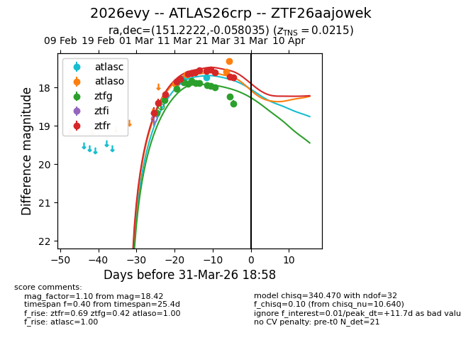
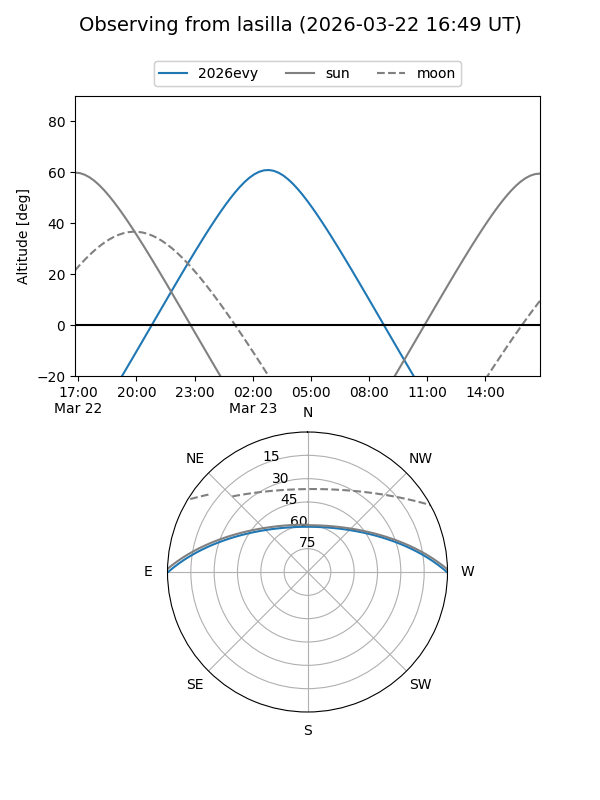
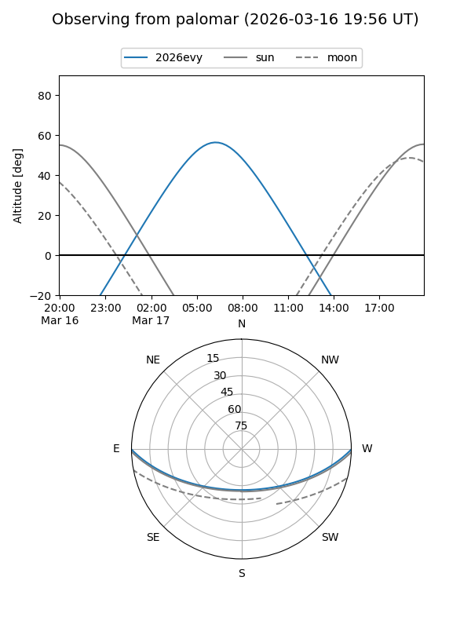
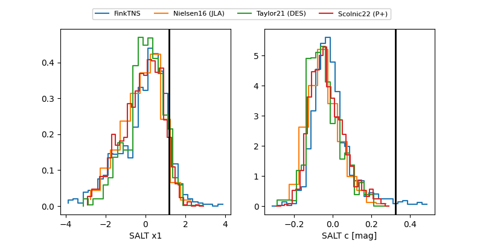

2026evy
Target 2026evy at 2026-03-31 19:01
Aliases and brokers:
FINK: link
Lasair: link
ALeRCE: link
TNS: link
YSE: link
alt names
ZTF26aajowek (ztf,fink_ztf)
2026evy (tns,yse)
ATLAS26crp (atlas)
Coordinates:
equatorial (ra, dec) = 151.2222,-0.05804
equatorial (HMS+DMS) = 10:04:53.34,-00:03:28.93
galactic (l, b) = (240.1474,+41.65816)
Flags:
Photometry:
last atlasc=17.73, atlaso=17.31, ztfg=18.42, ztfr=17.74
2 atlasc, 5 atlaso, 13 ztfg, 14 ztfr detections
Lightcurve

Visibility


Additional plots
